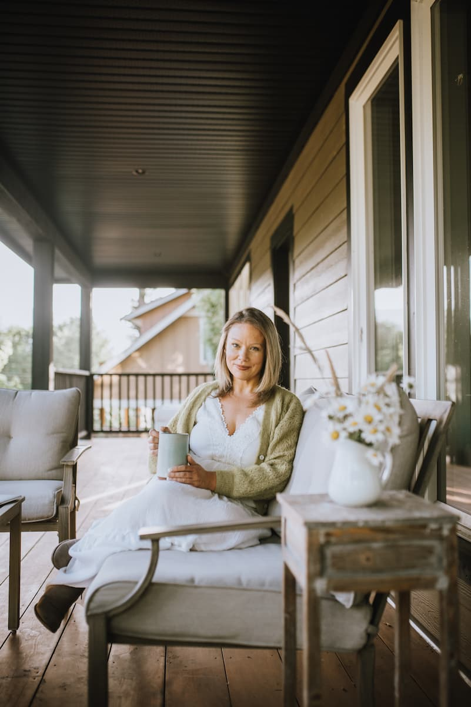

I'm a Communications Designer living in the heart of the Cowichan Valley. My 1908 farmhouse and the West Coast nature that surrounds it serve as my inspiration. From the chorus of songbirds to the graceful horses that canter past my studio window, there is magic in the Vancouver Island landscape that never ceases to amaze me. My creative process is a reflection of the joy that comes from the simplicity of country living. I design with the intention of sharing this sense of wonder with you.
Featured Projects
View selected projects below. More information can be found at Lina on Behance.
Posters
A collection of posters
view posters
Website
Web design and front end coding.
view designMagazine
Layout and design. Exploration of typography and grid.
view projectBranding
A down to earth brand experience.
view brandEducation
North Island College - Comox, BC
Communications Design Diploma
On track to graduate Summer 2024
University of the Fraser Valley - Abbotsford, BC
General Sciences
Honour Roll
Work Experience
I've had the privilege of running two successful businesses over the last decade. This is where I gained experience in design and digital marketing.
Owner
Parkridge Inc.
2010-2022
- Managed social media and email marketing
- Project manager for brand design and photography
- Lead a team of 10+ people
- Hosted large customer events
Manager
Farm & Folk
2018-2023
- Designed and built company website
- Managed social media
- Managed wholesale orders for 50+ stockists across Canada
- Made product